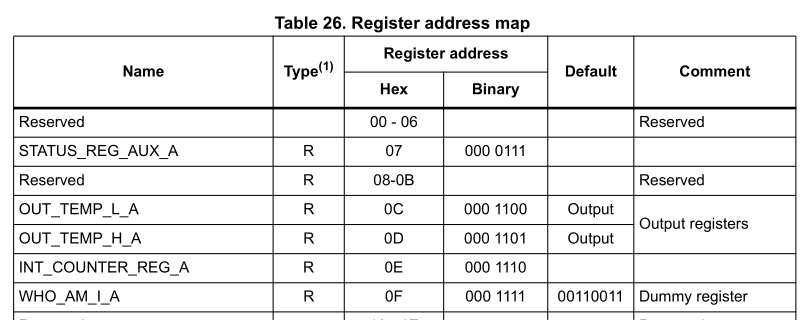
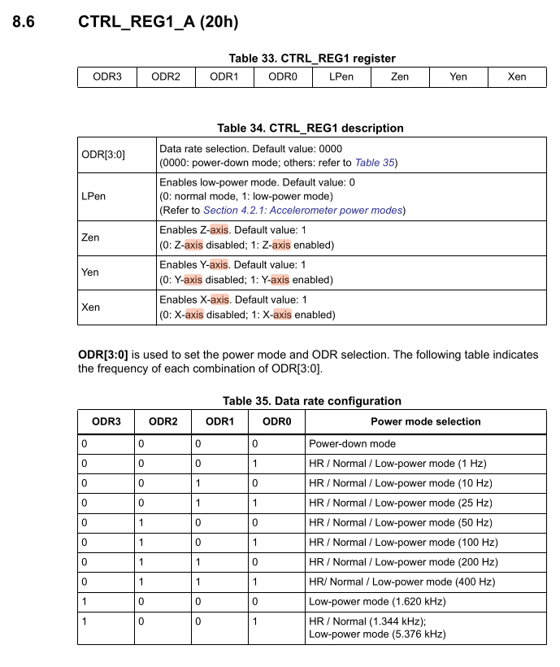
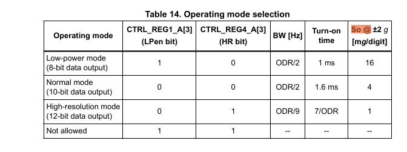
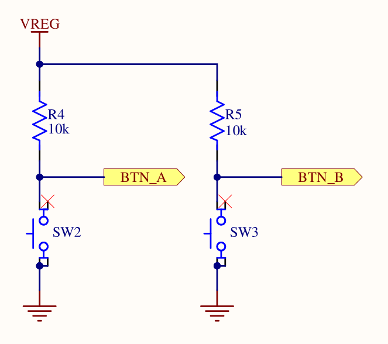
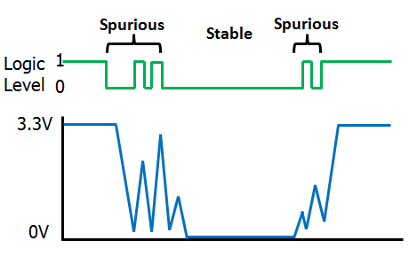

Introduction
This is the exercise book accompanying the Embedded Rust Workshop. The Workshop provides exercises for Embedded Rust which run on the BBC micro:bit v2.
For these exercises, you only require the following hardware:
- The micro:bit v2.
- A Micro-USB cable to power the microbit while also connecting it to your computer.
This little educational board has everything we need to learn the practical side of embedded Rust, including:
- A 5x5 LED matrix.
- The LSM303AGR on-board motion sensor.
- A serial connection accessible by a USB-CDC device
This device has even more features and external connectivity, and you can find all of this information on the micro:bit website.
Goals
After working through these exercises, you should have the following skills:
- Extract relevant information from datasheets and/or schematics for firmware development.
- Understand and work in embedded code using the
embassyasynchronous runtime, which includes using theasync/awaitsyntax. - Schedule concurrent tasks using
embassy. - Work with some components of a provided HAL (or BSP).
- Using
embassy-timeto perform delays and periodic operations or measure elapsed time. - Writing drivers for simple sensors
However, these exercises do not replace or provide a good theoretical foundation and do not teach general Rust programming. Low-level aspects like working with registers and details about system boot are intentionally skipped. The next section provides some further material recommendations to address this.
Further Materials
If you are a beginner in Rust, it is strongly recommended to work through the Rust book or work through some other method of your choice to learn the general language.
The following materials might be valuable for you as well:
- The embassy book provides additional information and documentation about the embassy asynchronous runtime.
- The Rusty bits provides excellent visual resources about various embedded Rust aspects.
- The Ferrous Systems Rust Training slides provide high-quality slides about various topics, including embedded Rust and aspects like system boot and peripheral access crates.
- micro:bit BSP provides a full BSP with drivers for the various board components.
Preparation
We are going to start with the preparation of the software tools in the next chapter.
Preparation
Windows Terminal
It is recommended to use a terminal for some parts of this workshop. There will be a lot of steps and instructions which show terminal commands. On Windows, you should install a proper terminal unless you plan to use something like WSL.
For example, you can install PowerShell.
Cloning the project with git
It is strongly recommended to clone the project with git. If you have never worked with git
before, you should work through a tutorial online first, for example this interactive one.
Alternatively, have a look at the learning resources.
If you are a git beginner, you can install it using the website instructions.
The project is hosted on GitHub publicly. It is also hosted on the IRS GitLab which you can access if you are an IRS employee.
You can clone this workshop by running the following git command:
git clone https://github.com/us-irs/embedded-rust-workshop.git
or with SSH:
git clone git@github.com:us-irs/embedded-rust-workshop.git
If you are an IRS employee and have access to the IRS GitLab:
git clone https://git.irs.uni-stuttgart.de/irs/embedded-rust-workshop.git
or with SSH:
git clone git@git.irs.uni-stuttgart.de:irs/embedded-rust-workshop.git
Have a look at the README of the repository. It explains the directory structure. The
most relevant part of the repository for you is the firmware/exercises folder.
Now that you have cloned the project, you might have to set up some software.
Rust and cargo
The first thing required is the Rust compiler and the cargo build and dependency management
tool. The Rust installation includes the cargo tool, so all you need to do is install
Rust by going to the Rust website and following the operating
system specific instructions.
After you have done this, you can verify your installation by running:
cargo version
Normally, you would also have to install the thumbv7em-none-eabihf toolchain and some other
useful tools, but this is performed automatically for you through the rust-toolchain.toml
file in the code directory.
flip-link linker
You need to install a special linker called flip-link for building the software. Run
the following command in the terminal:
cargo install flip-link
Flasher tool probe-rs
Next, you need some software which allows flashing the micro:bit via the USB interface.
We are going to use the probe-rs tool, which is well integrated into the Rust ecosystem.
The probe-rs website has install instructions
for various operating systems. Follow these, and then test your installation using the following
command
probe-rs --version
USB permission setup (Linux only)
Finally, if you are on Linux, you need to perform some steps related to udev to avoid permission
issues. probe-rs has a page with steps you can follow.
IDE
You can use any IDE of your choice which has good Rust Analyzer support.
If you are looking for a solid graphical IDE, VS Code is an excellent choice. Make sure to install the rust-analyzer plugin as well.
Testing everything
If you are preparing everything for the workshop, and you do not have access to the hardware yet, you are done! You can perform this step once you have access to the hardware in the workshop.
Now you should have everything you need to build and flash some application to the board. You can flash a test application now to verify the setup. We provide some test applications for you.
Connect the board to your computer using a Micro-USB cable. Make sure that your cable also supports the data interface and is not power-only.
Navigate into the firmware/apps directory.
Now, you can run the following command to build and flash a blinky application:
cargo run --bin blinky
On the console, you should see an output like this:
❯ cargo run --bin blinky
Compiling rust-app v0.1.0 (/home/muellerr/Rust/rust-embedded-workshop/code/app)
Finished `dev` profile [unoptimized + debuginfo] target(s) in 0.17s
Running `probe-rs run --chip nRF52833_xxAA --allow-erase-all target/thumbv7em-none-eabihf/debug/blinky`
Erasing ✔ 100% [####################] 48.00 KiB @ 35.81 KiB/s (took 1s) Finished in 3.55s
-- micro:bit Blinky application --
If probe-rs can not detect anything, make sure that (a) the board is connected through USB, and
(b) the udev rules were setup properly if you are on Linux.
If everything goes right, you should see the LED in the top-left corner blinking with a frequency of 1 second. If this is the case, congratulations, you have built and flashed an embedded Rust app and you made it through the preparation chapter successfully!
In the first exercise, you are going to build most parts of a blinky.
Terminology and Glossary
You can look up some terms in this terminology chapter if you have never heard them before or need a brief explanation.
- Peripheral: Dedicated hardware unit. On microcontrollers, this can be something like a UART, SPI or timer hardware block.
- Flash: Non-volatile memory which you can use to store your code and constants.
- Stack: Local memory that your program uses as it executes functions.
- Heap: Free memory that can be allocated in blocks. Oftentimes not available on microcontrollers.
- Static: Usually refers to the lifetime of a variable. A static variable is valid for the whole program duration.
- RAM: Volatile memory used to store your stack, heap and static variables.
- Processor: Hardware block which executes your code.
- MCU or Microcontroller: Integrates the processor, peripherals, flash, RAM and is usually placed on a printed circuit board as part of an embedded system.
- Firmware: Software which interacts closely with hardware. Usually refers to the finished software product on your MCU which runs the embedded system.
- PCB - Printed Circuit Board: This is usually an electronic circuit integrated on a sandwich structure. Often, chips, sensors, and other components will be soldered on top of the PCB.
- UART - Universal Asynchronous Receiver-Transmitter: Asynchronous serial communication interface that only requires two physical pins, one for transmission and one for reception.
- DMA - Direct Memory Access: A hardware subsystem can access the memory of a system directly without CPU intervention.
- CPU - Central Processing Unit: The core hardware block of a computer or microcontroller that executes instructions.
- HAL - Hardware Abstraction Layer: High level library providing drivers for the hardware blocks on a microcontroller.
- I2C - Inter-Integrated Circuit: Communication bus commonly used on embedded systems.
- TWI - Two-Wire Interface: Another name for I2C that vendors sometimes use.
- GPIO - General Purpose Input/Output: A digital signal pin on a microcontroller that can be configured as an input to read a digital level or as an output to set a digital level.
- SPI - Serial Peripheral Interface: A synchronous serial communication bus commonly used on embedded systems, typically requiring four signals: clock, chip select, MOSI and MISO.
- RTT - Real-Time Transfer: A SEGGER protocol for transferring data between a host computer and an embedded target, commonly used for logging output during development.
- BSP - Board Support Package: A library that provides drivers and abstractions specific to a particular hardware board, building on top of a HAL.
- IPC - Inter-Process Communication: Mechanisms that allow concurrent tasks or processes to exchange data and synchronize with each other.
Blinky Exercise
The end goal of this task is to make the LED D2, which is the LED in the upper left corner of the LED matrix, blink with a frequency of 1 second.
It involves working with a general purpose Input/Output (GPIO) pin which is a very common task on microcontrollers. A GPIO pin is a digital signal pin which can be used as an input pin to measure the digital level, or as an output pin to set the digital level. GPIO can also source current which can be used to drive a LED.
Writing a blinky also involves a timing component to achieve some blink frequency.
Go into the firmware/exercises directory. Inside the src/bin/blinky.rs file, you can
find the skeleton project that you should edit to work towards the blinky application. It includes
an explanation of the intermediate steps. Each intermediate step is explained in this document
in detail, including an intermediate solution which you can see by expanding the detail
segment.
You can find a full solution inside the blinky_solution.rs file.
Notice that you can always build and run the current state of your solution using
cargo run --bin blinky --release
It is generally recommended to use --release for embedded applications because the debug image
is very slow, which might lead to bugs when using timing-sensitive hardware like UARTs.
Some notes on the skeleton
Okay, there is not much here in this empty skeleton app, but you might still be interested in what it does.
The #![no_std] directive must be used because we do not have a standard runtime on our
microcontroller. The #![..] syntax applies this attribute to the whole module, which is our
whole application in this case. A standard runtime is usually only available on a full host system, for example
your development laptop. It usually includes components which make use of the operating system,
for example filesystem handling, input/output libraries printing to the console, time libraries
and much more. We do not have an operating system, so this does not exist for our target.
The #[no_main] directive also applies to the whole module and must be used because we do not want
to use the default main method, which is the entry point of the program. This main method
would not exist for our bare-metal target anyway. Instead, we want to use an entry point method
provided and called by an external library. In this case,
cortex-m-rt is used.
The use exercises as _; line imports everything in the library lib.rs. exercises is the name
of the library/crate. Inside lib.rs, we are including some important tools:
use defmt_rtt as _;: We want to usedefmtas our logging library, and combine it with SEGGER RTT as the transport protocol.use embassy_nrf as _;: We need to include this for the compilation of our run-time library to work. It needs access to an interrupt vector structure which is imported as a side-effect of importing the HAL.use panic_probe as _;: We need to provide apanichandler for the compilation to work. This includes a panic handler provided by a library.
#[embassy_executor::main] is used to annotate our entry point. It allows that entry point
to be an async function as well.
The async fn main(_spawner: Spawner) -> ! function prototype contains the following components:
asyncbecause this is an asynchronous function. This allows us, among many other things, to use otherasyncAPI inside the function.- The
!return type means that this function should never return. A microcontroller software generally must run forever, because what would the system do if there is no more code to execute? - The
spawnerargument can be used to spawn otherasynctasks. This is important for multi-tasking, but not relevant for us now. To avoid clippy/linter errors, a leading underscore was added to mark the unused argument.
Do not worry if you do not fully understand all of this! It is not necessary for practical programming
purposes. It is included once for completeness sake, because you will see these directives in
most embassy based programs.
First step: Initializing the chip
We are using a hardware abstraction layer (HAL) library to simplify our job. If we did not use this, we would have to use low-level register access code to interact with the hardware directly. That is not really beginner friendly, so we will start with something more high-level. The HAL introduces hardware abstractions, data structures and objects to interact with the hardware.
The nRF52833 chip which is part of the micro:bit has some initialization which makes sense for most firmware. This can include something like the clock initialization. When writing this HAL, it makes sense to package that configuration inside some initializer function.
Rust also has a nice type system which allows modelling of our problem domain. We have a
microcontroller which has peripherals and physical pins. We can model
these entities in our Rust code to allow ownership checks and resource management. For example,
the chip has a physical pin called P0_06. We can model this physical pin as a P0_06 field
of a data structure. Then we might have some other API which “consumes” this pin to take ownership
of it and use it for certain purposes. The pin can not be used for some other purpose anymore
and we prevented one source of a bug using the type system.
We use the embassy-nrf HAL which provides an initializer method providing both of these tasks.
It is already included in the dependency list inside Cargo.toml
for you so you can import and use it in your code directly. Look at the
docs of the init
method. This is what you want to use to initialize the chip. You can use the default method
of embassy_nrf::config::Config, it serves our purposes for now. Have a look at the
documentation of the Peripherals
data structure which is returned by the init function. It models all the peripherals and physical
pins like we previously mentioned.
Call this method and store the Peripherals object inside a variable called periphs.
#![allow(unused)]
fn main() {
let periphs = embassy_nrf::init(embassy_nrf::config::Config::default());
}Second step: Print something
We mentioned that we use the defmt library and the RTT protocol for logging purposes.
Our flasher takes care of grabbing log frames sent via RTT. Print something to the console so we
know what program is running. For example, you can use defmt::println!("your string") to print
something to the RTT pipe.
#![allow(unused)]
fn main() {
defmt::println!("-- micro:bit Blinky application --");
}Third step: Creating the GPIO drivers
Before we talk about creating the GPIO drivers for switching the LED, let’s talk about the hardware first. This is not a classic LED which can be driven by simply toggling a GPIO pin. Instead, it is a matrix where each row and each column has one connected GPIO line.

There is no reason to be overly scared of electronic schematics. Learning to read them is something that can be learnt without having to study electronic engineering, and with schematics you usually have the source of truth which is relevant for writing your software. This is an excerpt of the full schematics that we have also included in the repository. There is also a pin map table on the website.
Have a look at D2. This is a LED, and the task is to make that one blink. You can assume that the LED will turn on if the ROW1 GPIO is configured as an output pin and then driven high while the COL1 GPIO is configured as an output pin and then driven low.
But what is ROW1 and COL1? Those are actually connected to physical pins of your MCU:

Search for the two pins and look for the P0.XY number which is on the chip side (yellow background) on the left. This number is relevant for the code. Alternatively, open the schematics directly and use the search function to find them quickly. If you are struggling with this task, you can also simply use the pin map table and look at the GPIO name for COL1 and ROW1.
COL1 is P0.28 and ROW1 is P0.21
Now we have our physical pins. Have a look at the GPIO Output driver documentation.
The first argument is a peripheral resource which is a field of the periphs structure we
created earlier. The initial level is required because Output pins must have a defined state.
The third argument is the drive strength. You can use the standard value here.
Create an output driver for ROW1 and store it as a row1 object. Also do the same for COL1 and
store it as a col1 object. Remember that you assign the actual physical pin, which is represented
by an ID like P0.XY, and which you extracted earlier, by passing the corresponding field of the
periphs structure to the Output constructor.
If this all sounds very confusing to you and you do not really know what to do, look at the solution and try to understand it:
#![allow(unused)]
fn main() {
let mut row1 = Output::new(
periphs.P0_21,
embassy_nrf::gpio::Level::Low,
embassy_nrf::gpio::OutputDrive::Standard,
);
let col1 = Output::new(
periphs.P0_28,
embassy_nrf::gpio::Level::Low,
embassy_nrf::gpio::OutputDrive::Standard,
);
}Notice how we pass the physical pin object to the output driver.
Fourth step: Toggling the LED
Now, we have all the objects required to fulfill our task. For the remainder of the program lifetime, we just want to toggle the LED.
That is equivalent to a permanent loop, so you can use the Rust loop construct for this.
There already is one in the skeleton to avoid a compilation error.
Use the toggle method on the correct
GPIO driver to toggle the LED inside the loop. We actually told you the correct object/driver to use this on before.
If you forgot, maybe you can also figure it out from the schematic?
Toggling the LED in a permanent loop would cause the LED to not be on long enough for you
to see anything. Besides, the task was to make it blink with a frequency of 1 second.
We need to introduce a delay. We are going to use embassy_time for this.
Again, we included the dependency for you, so you can use it directly. So far, we did not have to use
any async API. This is because all the code we used so far was strictly synchronous, with no
need to delay in any shape or form. For example, configuring a GPIO driver usually only
requires a few writes to certain memory addresses. A delay can actually be modelled as an
asynchronous operation: We tell the compiler to asynchronously wait for a delay of 1 second to elapse.
We recommend using the Timer::after_millis API for this.
You can also use the Delay API but
you need to import the embedded_hal_async::delay::DelayNs trait for this to work.
You can store the timer inside a variable called timer. Notice that this does not perform
the required delay. For that, you need to await the timer. Use this information to perform
an asynchronous delay of 1 second or 1000 milliseconds inside the loop.
If you have never worked with async before: The await is a suffix statement. For example,
given the object timer, you would call timer.await; to await the timer.
This could look like this:
#![allow(unused)]
fn main() {
let timer = Timer::after_millis(1000);
timer.await;
}You can also directly write this in one line to avoid the intermediate variable:
#![allow(unused)]
fn main() {
Timer::after_millis(1000).await;
}Finishing up
When you run cargo run --bin blinky --release, you should see something like this:
#![allow(unused)]
fn main() {
❯ cargo run --bin blinky --release
Compiling exercises v0.1.0 (/home/muellerr/Rust/embedded-rust-workshop/firmware/exercises)
Finished `dev` profile [unoptimized + debuginfo] target(s) in 0.11s
Running `probe-rs run --chip nRF52833_xxAA --allow-erase-all target/thumbv7em-none-eabihf/debug/blinky_solution`
Erasing ✔ 100% [####################] 48.00 KiB @ 35.91 KiB/s (took 1s)
Programming ✔ 100% [####################] 48.00 KiB @ 22.82 KiB/s (took 2s) Finished in 3.54s
-- micro:bit Blinky application --
}Also, you should see the LED D2 blinking with a frequency of 1 second. If this is the case, you’ve done it! Blinking a LED might seem like a mundane task, but it actually teaches various concepts that can be transferred to other tasks because it involves resource management, working with hardware, and time handling. Also, you have extracted information from a schematic now! This is a very useful skill that embedded engineers should have. It allows you to directly use the schematic that is created as a side-product of the PCB design process.
UART echo application
The end goal of this task is to communicate with the serial port of the micro:bit. A very common interface to allow communication with a microcontroller is the UART protocol.
This is a protocol which facilitates communication through two physical pins, a transmit pin called TX and a receive pin RX. You cross-wire the TX pin of one side to the RX pin of the other side and vice-versa. Both sides have to agree on the communication speed which is commonly called baudrate.
The specific task is an echo application: Everything that is received on the RX pin of the microcontroller UART should be sent back to the sender via the TX pin.
The micro:bit UART interface
The micro:bit v2 has a very convenient feature which allows us to talk with one of its UART interfaces via the USB interface you already have. Have a look at this hardware block diagram taken from the website:

The nRF52833-QIAA block on the left side is the target MCU we are always programming. The
other microcontroller on the right side is the interface microcontroller. When we talk to the UART
of the target MCU, or we use probe-rs to flash new software to the target or read/write to its
RAM, we always do this through the interface MCU. The interface MCU exposes the serial port
via its USB interface as a so called USB-CDC device, where CDC is an abbreviation for
Communication Device Class.
Install the cyme tool using the following command:
cargo install cyme
Then run the command cyme with the micro:bit connected via USB. You should see a line like
this:
3 6 0x0d28 0x0204 BBC micro:bit CMSIS-DAP 9906360200052820ea998ce1eddd4919000000006e052820 - 12.0 Mb/s
Next, you can figure out the actual device name that you have to use to talk with the MCU by running the following command on Linux:
❯ ls -l /dev/serial/by-id/*
(...)
lrwxrwxrwx - root 12 Jun 09:39 /dev/serial/by-id/usb-Arm_BBC_micro:bit_CMSIS-DAP_9906360200052820ea998ce1eddd4919000000006e052820-if01 -> ../../ttyACM0
On Windows, you can instead use this command in the PowerShell terminal:
Get-WmiObject Win32_SerialPort | Select-Object Name,Description
Connecting to the UART interface - Linux
These instructions are Linux specific. Check the next segment for Windows specific instructions.
There are various programs available to connect to a serial port. For example, you can install
picocom and then run the following command:
picocom -b 115200 /dev/ttyACM0
Your device name might be different! It is named /dev/ttyACM0 because that was the output of
ls -l /dev/serial/by-id/*. Change this for your command if necessary.
Connecting to the UART interface - Windows
There are various programs available to connect to a serial port. On Windows, you can install PuTTY and then connect to the serial port using the COM port name you found before.
You need to use the Serial connection type and specify a speed of 115200. This could look something like this:

You can then open the connection to open a session connected to the serial port of the MCU.
UART hardware
Before we start writing code, let’s look at the hardware first. We mentioned that UART uses 2 physical pins. This means that two of the GPIO pins of the micro:bit need to be configured so they can be used by the UART hardware block for communication.
For a peripheral like UART, it is very common that a microcontroller support a larger selection of pins to be assigned to the UART. Similarly to the blinky exercise where LED control is mapped to certain GPIO pins, there is a pin mapping which depends on the board design.
You can either look at the pin map or the schematic to find the GPIO pin assignment. Please note that the pin assignment in the pin map is inverted (so RX in actually TX for your driver and vice-versa) because it is done from the view of the interface MCU, not the target MCU. Try to figure the pin mapping out on your own.
The TX target MCU pin is mapped to P0.06 while the RX target MCU pin is mapped to P1.08.
The micro:bit also has multiple UART instances. It allows using both of them, and we are going to use instance 0.
Some background information: Interrupts and direct memory access (DMA)
In the next segment, we will mention interrupts. The HAL we are using abstracts a lot of things away from us, but it does not hurt to have a basic understanding of what is happening behind the scenes.
In computing systems, processing important events in a timely manner is oftentimes done using interrupts. A really simple analogy: When the door bell rings or someone calls you, you will generally drop whatever you are doing right now to open the door or answer the phone call.
Mapping this analogy on a computer system, the delivery man ringing your door bell is the UART peripheral informing you about the data delivery, while you are the processor. When the hardware peripheral fires an interrupt, the CPU will stop whatever it is doing to service the peripheral, and then go back to whatever it was doing before. Depending on how the hardware is designed, you can do a lot of work with interrupts.
Some MCUs are designed in a way which allows hardware peripherals to access memory like RAM directly. This technique is called direct memory access (DMA). Combining interrupts and DMA allows to perform something like large data transfers with minimal CPU intervention.
The UART driver provided by the HAL that we are going to use combines both of these concepts as well.
Step 1 - Create a UART driver
In the previous exercise, we created a driver for a GPIO pin. Now, we create a driver for another hardware module: The UART. The HAL we are using provides a driver for us.
Read the uarte module docs in embassy
first. There are two flavors of this driver: A buffered one and a more simple one. In this example,
and for most of the applications in our domain, we generally want to ensure that we never lose
data, ideally independent of whatever the software is doing. A detailed explanation of how
this can be done would exceed the scope of this task, but you can assume that you need the
buffered flavor to not lose data between read calls, so that is what we are going to use.
Have a look at the constructor documentation of the buffered UART. It has 11 arguments! The driver is relatively complex, and the constructor is not spared from that. It allows reliable communication and exposes an elegant API though.
Remember that the Peri type is always used for resource management types and comes from the
peripheral singleton field which is named _periphs in our example. Remove the leading underscore,
because we are going to use this type now.
Let’s go through the arguments of the constructor one by one. You do not need to understand all of the details here but they are mentioned for completeness.
uarte- This is the UART instance we want to use. For our solution we are going to use instance 0 but the hardware allows to use instance 1 as well.timer- The driver needs one of the hardware timer blocks to count the number of received bytes. You can use any unused timer instance here.ppi_ch1- This is used to connect the UART hardware to the timer hardware for byte counting. Have a look at the PPI docs if you are interested in more information of this hardware feature. You can pass any unused PPI channel instance here.ppi_ch2- This is used for implementing permanent reception on the RX side in the background using DMA and interrupts. You can pass any unused PPI channel instance here.ppi_group- Required so that the PPI channel 2 can disable itself on certain events. You can pass any PPI group instance here.rxd- This is the physical GPIO pin which should be used as the RX pin. We figured out which pin this is in a previous section.txd- This is the physical GPIO pin which should be used as the TX pin. We figured out which pin this is in a previous section.irq- This is something embassy HAL specific. The driver relies on an interrupt handler being called for the UART. For technical reasons, that handler can not be specified in the HAL itself. Instead, the HAL provides a function that you should call on an interrupt, and we need to call this function in our own interrupt handler. However, the HAL provides a nice little macro that does this for us and creates a token structure for us. We need to provide that token structure to the HAL driver as proof that we have specified an interrupt handler.config- Configuration of the UART parameters. UART has various configurable parameters, and both communication partners have to agree on the same parameters. Usually, the most important parameter here is the baudrate.rx_buffer- Buffer used by the driver to permanently receive data in the background. The driver uses a double buffering scheme in the background to allow permanent reception of data.tx_buffer- Buffer used by the driver to transmit data.
Phew, that is a lot! We are going to provide multiple hints to simplify this task, in addition to the hints you can derive from the information above.
Your task is to create the driver and store it with the name uart.
Embassy provides a bind_interrupts! which declares an interrupt handler for you, which
is necessary for proper function of the UARTE driver. Have a look at its
documentation.
Use this macro to declare an interrupt handler for the UARTE. Keep in mind that it is sufficient
to declare an interrupt handler. The hardware takes care of calling it when required.
Write this above your main method.
#![allow(unused)]
fn main() {
use embassy_nrf::{buffered_uarte, peripherals};
embassy_nrf::bind_interrupts!(
struct Irqs {
UARTE0 => buffered_uarte::InterruptHandler<peripherals::UARTE0>;
}
);
}If you are struggling with figuring out the UART configuration, remember that we want to use
a baudrate of 115200 and that we can use the default configuration otherwise.
#![allow(unused)]
fn main() {
use embassy_nrf::uarte;
let mut uarte_config = uarte::Config::default();
uarte_config.baudrate = uarte::Baudrate::BAUD115200;
}If you can not figure out how the buffers are specified:
#![allow(unused)]
fn main() {
let mut driver_rx_buf: [u8; 256] = [0; 256];
let mut driver_tx_buf: [u8; 256] = [0; 256];
}Of course, other sizes work as well, but multiples of 128 are common. The size MUST be even for technical reasons.
For all other arguments, you have to pass in fields of the periphs structure.
The full solution of this step:
#![allow(unused)]
fn main() {
let mut uarte_config = uarte::Config::default();
uarte_config.baudrate = Baudrate::BAUD115200;
let mut driver_rx_buf: [u8; 256] = [0; 256];
let mut driver_tx_buf: [u8; 256] = [0; 256];
let uart = buffered_uarte::BufferedUarte::new(
periphs.UARTE0,
periphs.TIMER0,
periphs.PPI_CH0,
periphs.PPI_CH1,
periphs.PPI_GROUP0,
periphs.P1_08,
periphs.P0_06,
Irqs,
uarte_config,
&mut driver_rx_buf,
&mut driver_tx_buf,
);
}Not all UART driver initialization will be that complex! This is actually a very capable, but also very complex driver. There are other UART hardware implementations out there that do not support DMA but that are also less complex. Generally, most driver constructors will at the minimum consume pin resource handles and the UART resource handle while also expecting some UART configuration.
Step 2 - Split the driver into an RX and TX handle
Many Rust UART drivers allow splitting themselves up into separate RX and TX handles. For example,
you might be interested in handling reception and transmission in separate tasks or doing them
concurrently. Many hardware implementations can also support this. This driver has
a split method.
Create distinct uart_rx and uart_tx driver handles.
#![allow(unused)]
fn main() {
let (mut uart_rx, mut uart_tx) = uart.split();
}These are already mutable because the methods we are going to use require mutable access.
Step 3 - Read into a reception buffer inside a loop
Now we want to read something from the UART. You can use the uart_rx driver to do this. It has
an async read method
you can use for this purpose.
We need a separate buffer for this again. The buffer that we already declared is used exclusively by the driver. You can create a new buffer similarly to the way you created the first one. You can use a size like 64 or 128 here. Generally, it often makes sense to determine the dimension based on the maximum expected packet size.
Your task is to asynchronously read into a buffer. Do a match call on the resulting
Result so that you can do clean error handling as well. Keep in mind that you also need to
call await on the read call because it is an async function. Create the buffer before
the loop call because there is no need to re-instantiate it for every read call.
#![allow(unused)]
fn main() {
let mut rx_buf: [u8; 64] = [0; 64];
loop {
match uart_rx.read(&mut rx_buf).await {
Ok(_bytes_received) => (),
Err(_e) => ()
}
}
}Step 4 - Write back whatever was received
Now, we want to send back everything we received. In the Ok case, we will have access
to the number of received bytes. This can also be smaller than the full buffer size!
In the Ok arm of the match statement on the read call, use the write_all method of
uart_tx. You also need to import the embedded_io_async::Write trait for this to work.
Remember that you want to send the number of bytes you actually received back, not the full buffer.
#![allow(unused)]
fn main() {
let mut rx_buf: [u8; 64] = [0; 64];
loop {
match uart_rx.read(&mut rx_buf).await {
Ok(read_bytes) => {
match uart_tx.write_all(&rx_buf[0..read_bytes]).await {
Ok(_) => ()
Err(_e) => ()
}
}
Err(_e) => ()
}
}
}Step 5 - Verifying everything works
Now, after you have flashed this application using cargo run --bin uart_echo --release, you send
anything to the MCU and it should be sent back. It is recommended to use the optimized variant
because the non-optimized code is very slow and might miss out bytes. When you use an application
like picocom or PuTTY, this has the side effect that it looks like you are typing on a console.
Test that your echo application works properly by connecting to the serial port like we explained earlier and typing anything. You should now see everything you type appear on your terminal application, because your terminal app just displays what it received back from the MCU, which is what you typed.
Finishing Up
You are able to send and receive data to the MCU from your computer via UART now! The UART echo application
is oftentimes the “Hello World” of UART applications. This one is actually quite capable.
There are some things that can be improved in our app. For example, you could add proper
error handling for the Err(e) match arms, which could at the minimum include a defmt::warn! or
defmt::error! log.
Some interesting information: When you asynchronously call read and nothing is arriving on
the RX pin, the CPU can actually do other stuff! All the reception is handled in the background
by the dedicated interrupt handler provided by our HAL. Similarly, while you are writing
data out asynchronously using write and/or write_all, all the driver needs to do is
pass the address and the transfer size to the hardware. All the rest is done by the hardware
using DMA.
Practical applications in our domain will oftentimes use binary protocols. In principle, we could
send binary packets to this application and we would also receive those back. However, using a utility
like picocom allows for nice visualization that everything is working.
There is an UART Spacepackets exercise where we communicate with an MCU using standardized CCSDS spacepackets via the serial interface. This communication pattern is very commonly used at the IRS!
Accelerometer Sensor Driver
The micro:bit v2 has an on-board LSM303AGR e-compass module. Writing device drivers is a common task in our domain, so that is what we are going to do in this exercise. There are open-source drivers available, but we are going to write a new one so you can actually learn how this process works. This is an on-board MEMS sensor. It’s tiny! You can see where it is located on the board on the website. Look for the ST LSM303AGR on the board images.
This is a capable MEMS sensor which has confusing sections in its datasheet. It uses a lot of abbreviations and expects implicit knowledge. This is unfortunately something that is very common in datasheets written by hardware companies. We have looked at the datasheet and extracted the most relevant knowledge by also looking at available drivers provided by the community so you do not have to do this guesswork anymore.
The goal of this exercise is to write a very rudimentary driver which can be used to read the acceleration values. While it might be a bit more relevant to implement the magnetometer reading for our applications (satellite systems without propulsion), the accelerometer gives a nice visualization without requiring a rod magnet to verify sensor readings. The basic principles of reading and converting raw sensor values remains the same and can be transferred to other sensors.
Features of the hardware sensor
Let’s have a look at the feature set of that sensor first by looking at the micro:bit docs:
- e-compass which combines a magnetometer and accelerometer into one package
- Configurable range of 2/4/8/16g
- Configurable resolution of 8/10/12 bits
The sensor also has an output data rate (ODR) configuration which specifies how often the sensor updates its internal value. Let’s make some requirements for our driver to simplify our task:
- Our simple driver will only support +- 2g.
- Only support normal resolution of 10 bits.
- Configurable ODR settings.
The sensor has two communication interfaces: I2C and SPI. However, by looking at the HW schematic:
We can see that the sensor is connected through I2C. An in-depth explanation of the I2C (or SPI) bus would exceed the scope of this exercise, but the most relevant key information from a software engineering perspective are summarized here:
- I2C allows communication between multiple devices through two GPIO pins only. One is the data pin which is called the serial data line (SDA) and the other pin is called the serial clock (SCL)
- The most common I2C communication speeds are normal mode with 100 kHz and fast mode with 400 kHz.
- I2C relies on device addressing to allow talking to a single device on a shared bus.
- An I2C transaction can be abstracted with three operations:
read,writeandwrite_read.
The Rust embedded-hal crate provides generic traits that portable device drivers and HAL implementations
need to agree on. You can have a look at how these basic bus properties were captured in the
I2C trait. Notice how its
API functions expect a device address and are named read, write and write_read.
We are not going to use this trait directly for this exercise, but the trait would be relevant if you either want to write a driver which works on multiple hardware platforms, or if you want a driver which works with both exclusive bus access and when sharing the bus with multiple other devices.
Looking at the pin map, we can figure out that the SDA pin is mapped to P0.16 and the SCL pin is mapped to P0.08. There are also external I2C pins, but those are routed to the edge connector and are used to connect external devices.
When it comes to writing device drivers, you will generally wrap the communication driver object
in your driver. For this device, you would wrap some I2C driver. We can omit some abstraction
because we know that we are never going to share the bus,
and we do not want to write a portable driver. This means we can wrap the bus driver provided
by the HAL. Nordic uses a different name for the I2C protocol and calls it TWI (two-wire interface).
There is a twim which provides
support for the Two Wire Interface in master mode, which is relevant for us.
Step 1 - Create the I2C/TWI driver
Open the src/bin/accelerometer.rs file. Start creating the twim driver and storing it into an object named i2c_bus.
We provided all required information, including the pin mapping for the SDA and SCL pin.
The default TWI configuration provided by embassy is sufficient for our purposes. The name of
the peripheral in the library are TWISPI0. You can assume that a TX RAM buffer of 16 or 32 bytes
is sufficient.
If you are struggling with this step and you have not worked through the blinky or the UART echo exercise yet, you should work through those first.
If you do not remember the exact syntax for creating the interrupt bindings, you can look at the embassy example or at the details:
#![allow(unused)]
fn main() {
pub use embassy_nrf::{twim, peripherals};
bind_interrupts!(struct Irqs {
TWISPI0 => twim::InterruptHandler<peripherals::TWISPI0>;
});
}Rest of solution:
#![allow(unused)]
fn main() {
let mut tx_ram_buffer: [u8; 32] = [0; 32];
let i2c_config = twim::Config::default();
let i2c_bus = embassy_nrf::twim::Twim::new(
periphs.TWISPI0,
Irqs,
periphs.P0_16,
periphs.P0_08,
i2c_config,
&mut tx_ram_buffer,
);
}Step 2 - Create the basic driver object
You are now going to create a driver object instead of just re-using existing library code in your
application. Go into the src/accelerometer.rs file which is part of the crate library. This
file/module is already included in src/lib.rs for you, but it is empty. Start by creating an empty
structure named Accelerometer here.
Then add one field to that structure: The I2C driver you just created. You actually need a lifetime
of Accelerometer now because the I2C driver has a lifetime as well.
#![allow(unused)]
fn main() {
pub struct Accelerometer<'d> {
i2c: embassy_nrf::twim::Twim<'d>
}
}Step 3 - Add a constructor
Add a constructor to your driver object by adding a new method which returns Self. In the most
simple form, the constructor could simply take the I2C bus as an input argument and then create and
return itself.
However, we also want to verify that the communication with our device works properly. Sensors
from ST microelectronics commonly have a WHO AM I register which you can read to verify
basic sensor communication. The value read from this register should have a fixed value that
you can check. Your task is to add a constructor which constructs Accelerometer, checks the
communication and returns Result::Ok(Self) on success and some error if the I2C communication fails
or the WHO AM I register value is invalid.
You can use an enum to model an error which can
either be an embassy_nrf::twim::Error
or some WHO AM I error unit variant. Add an asynchronous constructor function and start with an empty
todo!() implementation block.
If you feel confident in your Rust abilities, try to solve this without using hints and intermediate solutions.
The constructor will have a basic form like this, including a suitable initialization error type:
#![allow(unused)]
fn main() {
#[derive(Debug)]
pub enum InitError {
I2c(embassy_nrf::twim::Error),
WhoAmIInvalid
}
impl<'d> Accelerometer<'d> {
// Constructor.
pub async fn new(mut i2c: embassy_nrf::twim::Twim<'d>) -> Result<Self, InitError> {
todo!();
// Implementation
// ...
}
}
}But how do you actually read back this value using I2C? On this device, you can read a register by first sending the register ID you want to read and then reading back one byte.
The register map can be found in the device datasheet. We have included an excerpt of the register map on page 43 for you:

Create a enum which includes the Register IDs, for example one named Register.
Add the WhoAmI variant with the correct register address value. Derive Debug, Copy, Clone,
defmt::Format, PartialEq and Eq on it.
#![allow(unused)]
fn main() {
#[derive(Debug, Copy, Clone, PartialEq, Eq, defmt::Format)]
pub enum Register {
WhoAmI = 0x0f
}
}You can add new values to the enum as you need them. Or you put in a lot of work and create a complete one.
AI can help with this menial job.
Now you have everything you need to read the value. You have to use the write_read API.
We already provided hints what you have to send and how much you have to read back. Read back
the WHO AM I register and verify its value. From the datasheet, we can determine the expected value
to be 0b00110011. You can create a constant or associated constant on the Accelerometer object
to store the expected value.
We mentioned that you always have to pass the device address when using the I2C driver
API. For the accelerometer, that address has a fixed value of 0x19 that you can retrieve
from the microbit v2 schematic or from the sensor datasheet. Create an associated constant
ADDR on the Accelerometer driver which has that value.
#![allow(unused)]
fn main() {
impl Accelerometer<'_> {
pub const ADDR: u8 = 0x19;
}
}Now you have everything you need to write the constructor. Finish the implementation for the new
method. Return some error variant if the read back
value is not equal to the expected one, and return a driver instance otherwise.
#![allow(unused)]
fn main() {
impl<'d> Accelerometer<'d> {
pub async fn new(mut i2c: embassy_nrf::twim::Twim<'d>) -> Result<Self, InitError> {
let mut buf = [0; 1];
i2c.write_read(Self::ADDR, &[Register::WhoAmIAcc as u8], &mut buf)
.await?;
if buf[0] != Self::WHO_AM_I_VALUE {
return Err(InitError::InvalidWhoAmI);
}
Ok(Self { i2c })
}
}
impl Accelerometer<'_> {
pub const ADDR: u8 = 0x19;
pub const WHO_AM_I_VALUE: u8 = 0b00110011;
}
}The interaction with other registers is comparable. In general if you want to read registers,
you still have to use write_read to select the correct registers, while you can just use
write if you only want to write to a register.
Intermediate solution file:
firmware/exercises/src/accelerometer_step3.rs
Step 4 - Configure the sensor
Now you have a driver instance, but you actually want to read some sensor values. We tried this for you before, and wondered why the accelerometer readings returned all zero. It turns out you need to write some configuration registers to actually enable the device. Let’s do this first.
We extracted the definition of CTRL_REG1_A on page 47 of the datasheet for you:

The device is in Power-Down mode on startup. This is the most important control register because it allows us to set the output data rate (ODR), enabling the device and individual axes. The datasheet specifies an 8-bit register configuration.
- Bits 7 down to 4 are the ODR3 to ODR0 configuration bits
- Bit 3 is the low power enable bit
- Bits 2 down to 0 enable the axes Z, Y, and X respectively
We are going to use a crate called bitbybit which provides a declarative way to specify
registers and then provides a convenient API to build the register value which avoids
the need to write bitshifts and masks.
Have a look at the examples from the bitbybit
crate and try to specify this register using bitbybit::bitfield. Adding default = 0x0
inside proc macro attributes also adds a builder API which is useful for us while debug adds
an improved Debug implementation. This can be combined with the
arbitrary-int library.
We can also use bitbybit::bitenum to model the ODR configurations with an enum.
If you have worked with these libraries before, try to create the data structures using those libraries. Otherwise, have a look at the solution and try to understand them by cross-checking them with the register definition we provided you above:
Inside the src/accelerometer.rs library file:
#![allow(unused)]
fn main() {
/// Output data rate configuration.
#[bitbybit::bitenum(u4, exhaustive = false)]
#[derive(Debug)]
pub enum OdrConfig {
PowerDown = 0b0000,
Odr1Hz = 0b0001,
Odr10Hz = 0b0010,
Odr25Hz = 0b0011,
Odr50Hz = 0b0100,
Odr100Hz = 0b0101,
Odr200Hz = 0b0110,
Odr400Hz = 0b0111,
LowPower1620Hz = 0b1000,
HrNormal1344HzLowPower5376Hz = 0b1001,
}
#[bitbybit::bitfield(u8, default = 0x0, debug)]
pub struct ControlReg1 {
#[bits(4..=7, rw)]
odr: Option<OdrConfig>,
#[bit(3, rw)]
low_power_enable: bool,
#[bit(2, rw)]
z_enable: bool,
#[bit(1, rw)]
y_enable: bool,
#[bit(0, rw)]
x_enable: bool,
}
}Now you have everything you need to update the register. The excerpt of the datasheet also
shows the register ID, which is 0x20. Add the CtrlReg1 variant to the Register enumeration
you created before. You can now use the builder API on ControlReg1 to build the target
configuration.
Use i2c.write inside the constructor to write the ControlReg1 to the right register ID,
using an ODR of 100 Hz. Remember that you can write a register by sending the register ID as the
first byte, and the register value as the second byte.
Updated constructor:
#![allow(unused)]
fn main() {
pub async fn new(mut i2c: embassy_nrf::twim::Twim<'d>) -> Result<Self, InitError> {
let mut buf = [0; 1];
i2c.write_read(Self::ADDR, &[Register::WhoAmIAcc as u8], &mut buf)
.await?;
if buf[0] != Self::WHO_AM_I_VALUE {
return Err(InitError::InvalidWhoAmI);
}
i2c.write(
Self::ADDR,
&[
Register::CtrlReg1 as u8,
ControlReg1::builder()
.with_odr(OdrConfig::Odr100Hz)
.with_low_power_enable(false)
.with_z_enable(true)
.with_y_enable(true)
.with_x_enable(true)
.build()
.raw_value(),
],
)
.await?;
Ok(Self { i2c })
}
}Intermediate solution file:
firmware/exercises/src/accelerometer_step4.rs
Step 5 - Read the raw accelerometer values
Now we can read the raw sensor values. By looking at the register mapping on page 43 of the datasheet again, we can figure out the base addresses of the sensor readout:
- OUT_X_L_A at 0x28
- OUT_X_H_A at 0x29
- OUT_Y_L_A at 0x2A
- OUT_Y_H_A at 0x2B
- OUT_Z_L_A at 0x2C
- OUT_Z_H_A at 0x2D
As you can see, those registers are consecutive. The datasheet mentions that the data is provided
as a signed two-complemented number which is left-adjusted. They are also ordered in little endian
format, where the low byte is at the smaller memory address. This is relevant for creating
the raw i16 binary value from the raw bytes in the correct order.
We could perform 6 individual reads on the addresses specified above. However, the device
has a register auto-increment feature that we can use. By setting bit 7 in the register ID
value to 1, we can tell the device to automatically increment the device address for the next
read. This allows us to read all 6 registers with one I2C write_read transaction.
Create a AUTO_INCREMENT_MASK constant or associated constant and set it to 0x80 or
0b1000_0000. Now add a method named read_raw to your driver which will return the sensor readout.
The _raw suffix makes it clear that those are raw sensor values which are not worth much on
their own and still require some processing and conversion to proper units.
What do we actually return? A simple way would be to return a (i16, i16, i16) tuple.
You can also create a dedicated named structure and this is what we are going to do.
Add a structure named ReadoutRaw, which has x, y and z public fields.
You can add common derives like Debug, Copy, Clone, defmt::Format as well.
#![allow(unused)]
fn main() {
#[derive(Debug, defmt::Format)]
pub struct ReadoutRaw {
pub x: i16,
pub y: i16,
pub z: i16,
}
}Now you can specify the async read_raw method for your driver as well.
#![allow(unused)]
fn main() {
pub async fn read_raw(&self) -> Result<ReadoutRaw, Error> {
todo!();
}
}The method we specified in our solution only required a shared reference of the driver.
This makes sense, because we are not configuring anything in the driver. However, we still require
mutable access to the wrapped i2c driver because that is just the function prototype of the
write_read method. We can fix this by using interior mutability.
Wrap the i2c field of the structure in a core::cell::RefCell. You also have to update the constructor.
#![allow(unused)]
fn main() {
use core::cell::RefCell;
pub struct Accelerometer<'d> {
i2c: RefCell<embassy_nrf::twim::Twim<'d>>,
}
}and inside constructor method, use core::cell::RefCell::new(i2c) to wrap the i2c driver in
a RefCell.
You can get a mutable reference to the i2c driver using borrow_mut on the
field without requiring mutable access to the driver now.
Next, you can write the actual implementation which reads the sensor values. Remember that you can
read all 6 registers with one transaction by setting the AUTO_INCREMENT_MASK bit on the register
start ID, which would be the OUT_X_L_A register in our case. Now you just have to specify an
appropriate receive buffer size to read 6 words starting at that address.
After you have read the 6 bytes into a raw buffer, you need to extract and convert them into
a raw i16 for further conversion. You can use u16::from_le_bytes to do this conversion.
#![allow(unused)]
fn main() {
impl Accelerometer<'_> {
pub const ADDR: u8 = 0x19;
pub const WHO_AM_I_VALUE: u8 = 0b00110011;
pub const AUTO_INCREMENT_MASK: u8 = 0x80;
pub async fn read_raw(&self) -> Result<ReadoutRaw, Error> {
let mut buf = [0; 6];
self.i2c
.borrow_mut()
.write_read(
Self::ADDR,
&[Self::AUTO_INCREMENT_MASK | Register::OutXLowAcc as u8],
&mut buf,
)
.await?;
Ok(ReadoutRaw {
x: u16::from_le_bytes([buf[0], buf[1]]),
y: u16::from_le_bytes([buf[2], buf[3]]),
z: u16::from_le_bytes([buf[4], buf[5]]),
})
}
}
}Intermediate solution file:
firmware/exercises/src/accelerometer_step5.rs
Step 6 - Convert and read the values in the SI unit mg
Those raw values are not worth much by themselves. There are some conversion steps that we need to do. The datasheet specifies the raw binary format as a left-adjusted signed two-complement number. There are 2 conversion steps required here:
- Eliminate trailing bytes depending on the selected resolution. We specified that this device has different resolution rates represented by bits. We can assume normal resolution (10-bits). This means that our relevant value will be placed on bit positions 15 downto 6. The simplest way to perform this scaling is by right-shifting by 6.
- Scale the result to achieve our value in SI units. The datasheet specifies the sensitivity for a full scale of +- 2g in mg per digit. You need to multiply the raw value with that table value. However, that table value also needs to linearly scale with the full scale.
A general formula for the acceleration which should have been provided in the datasheet but is not for mysterious reasons, can therefore be written as:
$$ A_{mg} = (R \gg n) \times \left( S_{2g} \times \frac{FS}{2} \right) $$
- R is the raw value
- S is the sensitivity value you can take from the table below. It is called SO in the table, which is an abbreviation for scale output.
- n is the resolution shift, which is 16 minus the number of resolution bits, e.g. 6 for 10-bit resolution.
- FS is the full scale value, e.g. 2 for +- 2g full scale.

You can assume FS to be +-2g which is the default full scale for the sensor.
We would like to write our driver in a way that allows changing the resolution and full scale
in the future. Introduce two new enumerations which allow modelling this: A Mode enumeration
and a FullScale enumeration in the library. The Mode enumeration should include the Power Down,
Low Power, Normal and High Resolution Mode. The FullScale should include all full scales that this
device supports. You cannot specify enum variants with leading numbers, but you can use a
leading underscore to allow this. In the full scale enumeration, assign the actual full scale
value as the enum value.
#![allow(unused)]
fn main() {
#[derive(Debug, Clone, Copy, defmt::Format)]
pub enum FullScale {
_2g = 2,
_4g = 4,
_8g = 8,
_16g = 16,
}
#[derive(Debug, Clone, Copy, PartialEq, defmt::Format)]
pub enum Mode {
/// Power down
PowerDown,
/// Low power (8-bit)
LowPower,
/// Normal mode (10-bit)
Normal,
/// High resolution (12-bit)
HighResolution,
}
}Now add a resolution_shift method to the Mode structure which returns the right-shift
value n that you have to apply to the raw value.
Then, add a scale_multiplier method to the Mode enumeration which also takes a FullScale as
an argument and calculates the final multiplier which needs to be applied to the shifted raw
value.
#![allow(unused)]
fn main() {
impl Mode {
pub const fn resolution_shift(&self) -> i16 {
match self {
Mode::PowerDown => 0,
Mode::HighResolution => 4,
Mode::Normal => 6,
Mode::LowPower => 8,
}
}
/// The table 14 specifies the scale output values at += 2g in mg/digit.
///
/// At higher full scales, that value needs to be scaled as well. When using a full scale
/// of 2, notice how the full scale cancels out with the division and you achieve the table
/// values.
pub const fn scale_multiplier(&self, full_scale: FullScale) -> u32 {
let full_scale = full_scale as u32;
match self {
Mode::PowerDown => 1,
Mode::LowPower => (16 * full_scale) / 2,
Mode::Normal => (4 * full_scale) / 2,
Mode::HighResolution => (1 * full_scale) / 2,
}
}
}
}Now add a mode and full_scale field to your driver. Those have fixed values
for now, but you could make them configurable at a later point.
#![allow(unused)]
fn main() {
/// Driver for the LSM303AGR e-compass.
pub struct Accelerometer<'d> {
i2c: RefCell<embassy_nrf::twim::Twim<'d>>,
full_scale: FullScale,
mode: Mode,
}
}In the constructor, simply hardcode those fields to the default values the device has at startup, which is +- 2g full scale and normal resolution mode.
Now, we will introduce a higher-level type which can be used to read the accelerometer values
in SI units. Add a new structure to your library called Readout. This structure should
include a raw field with the ReadoutRaw type, a full_scale and a mode field.
#![allow(unused)]
fn main() {
#[derive(Debug, defmt::Format)]
pub struct Readout {
raw: ReadoutRaw,
full_scale: FullScale,
mode: Mode,
}
}Now add the following API methods for Readout:
x_mgwhich returns X axis value in mg as ani32.y_mgwhich returns Y axis value in mg as ani32.z_mgwhich returns Z axis value in mg as ani32.xyz_mgwhich returns the value of all axes in mg as a(i32, i32, i32)
Use the formula we specified above and the methods we added to do this.
#![allow(unused)]
fn main() {
impl Readout {
/// X axis readout in mg.
pub const fn x_mg(&self) -> i32 {
(self.raw.x >> self.mode.resolution_shift()) as i32
* self.mode.scale_multiplier(self.full_scale) as i32
}
/// Y axis readout in mg.
pub const fn y_mg(&self) -> i32 {
(self.raw.y >> self.mode.resolution_shift()) as i32
* self.mode.scale_multiplier(self.full_scale) as i32
}
/// Z axis readout in mg.
pub const fn z_mg(&self) -> i32 {
(self.raw.z >> self.mode.resolution_shift()) as i32
* self.mode.scale_multiplier(self.full_scale) as i32
}
/// XYZ axis readout in mg.
pub const fn xyz_mg(&self) -> (i32, i32, i32) {
(self.x_mg(), self.y_mg(), self.z_mg())
}
}
}Finally, we want to have a convenience method called read on our driver which
returns this Readout structure. Add that method and re-use the read_raw method
that you have already written to initialize the raw field of the Readout structure.
You can initialize the full_scale and mode field from the cached values of the driver.
#![allow(unused)]
fn main() {
impl Accelerometer<'_>
// (other functions...)
pub async fn read(&self) -> Result<Readout, Error> {
Ok(Readout {
raw: self.read_raw().await?,
full_scale: self.full_scale,
mode: self.mode,
})
}
}
}Step 7 - Print the accelerometer values inside a loop periodically
We finally have everything we need to periodically read the sensor values.
Go ahead and create the driver you have written inside your example application using the constructor
you have written.
The datasheet mentions a start-up time of 1.6 ms for our configuration.
Call the read method periodically inside a loop and print the xyz values using the
xyz_mg method and defmt.
#![allow(unused)]
fn main() {
let accelerometer = Accelerometer::new(i2c_bus)
.await
.expect("creating motion sensor driver failed");
// For normal mode, 1.6 ms turn-on time.
Delay.delay_us(1600).await;
loop {
match accelerometer.read().await {
Ok(reading) => {
defmt::info!("Accelerations (mg): {}", &reading.xyz_mg());
}
Err(e) => {
defmt::error!("i2c error: {}", e);
}
};
Timer::after_millis(50).await;
}
}Finishing Up
If you have done everything correctly, you should see output like this:
-- micro:bit Accelerometer application --
0.003967 [INFO ] Accelerations (mg): (-48, -232, 980) (accelerometer_solution src/bin/accelerometer_solution.rs:43)
0.055694 [INFO ] Accelerations (mg): (-44, -228, 984) (accelerometer_solution src/bin/accelerometer_solution.rs:43)
Your acceleration values may vary slightly based on the orientation of your micro:bit. Regardless, you should measure an acceleration of around 1g, which is the normal force that counteracts gravity when the device rests on a surface.
You can now try things like shaking the device to see how the x and y axis react to this. If you have something to cushion the fall, you could also do a freefall test, which should make the 1g counter force you normally see disappear while the device is free-falling. You might also see spikes when the micro:bit is suddenly decelerated after it hits a surface after free-falling.
You might wonder why an e-compass module has an accelerometer. You can actually use an accelerometer to account for device tilt combined with the magnetometer for the north direction measurement. This is a basic form of sensor fusion which can be used to improve the quality of the compass.
Multi-tasking exercise and IPC
In this exercise, you will learn how to do pre-emptive multi-tasking with embassy. You will also learn some basic ways to do communication between tasks, which is commonly called inter-process communication (IPC).
Multi-tasking on embedded systems
Most non-trivial embedded applications have to perform multiple tasks at once. Some of these tasks might have real-time constraints which means that the tasks need to be performed within a certain time frame.
You could write a super loop firmware, where a custom state machine takes care of performing all tasks at once. However, this quickly gets unwieldy as the number of tasks grows. Furthermore, it is error-prone when trying to fulfill real-time constraints because a CPU intensive task in your state machine could violate those constraints.
In the C/C++ world, you would use a real-time operating system instead, which will always include some way to schedule tasks which run concurrently. Concurrency is the general term of performing multi-tasking on a computing system. It also works on single-core systems by letting a scheduler switch between multiple tasks quickly.
There is a distinction between scheduling types:
- Pre-emptive scheduling - This type is more suitable for real-time requirements. Tasks can have priorities. If a higher-priority task needs work to be done, it will pre-empt a lower priority task to ensure the task gets done as quickly as possible. Pre-emption means that the scheduler will switch from the low priority tasks to the high priority task to service it as quickly as possible.
- Cooperative scheduling - Each task will run until completion or until the work is done. After that, the task will yield to the operating system, which means ceding control to the scheduler so it can start running other (higher-priority) tasks. This means that a low priority task could stop another high priority task from being executed in time.
Interrupts are a special case here. On Cortex-M MCUs like the one we have on the micro:bit, there is a distinction between thread mode and interrupt mode. Thread mode is the default mode where the CPU executes your regular code. Interrupt mode is used when an interrupt occurs and the CPU executes an interrupt handler. An interrupt will always pre-empt the thread mode and can be treated like a pre-emptive task as well.
The default embassy executor runs all async tasks in cooperative mode. You need to cede control
in your async tasks by using await somewhere or a task might monopolize all the CPU time. This
makes it harder to ensure your system meets real-time requirements. Moreover, a task with a bug could
monopolize all the CPU time
and stop other tasks from running. Doing this is a bug on a pre-emptive system as well, but the
consequences are more direct on a system like this. You could use interrupts to allow fulfilling real-time
requirements on important tasks. However, for technical reasons, interrupt handlers must
be regular synchronous functions. Is it possible to have pre-emptive tasks while still being
able to use async? embassy provides the InterruptExecutor
feature as the answer.
You can still have your regular async tasks, but they will now be scheduled by the interrupt mode
of the processor. The processor also allows assigning priorities to an interrupt handler, which
means that all the tasks scheduled by a certain interrupt handler inherit that handler’s priority.
Step 1 - Create a second task
The first step is to create a second task which prints something when the left user button (A) is pressed. We actually provided a component that you can use for this. The InputChannel can be used to listen for events on GPIO input channels, which includes voltage transitions on those channels which occur when the button is pressed.
It is really simple to add a new task in embassy: Create a new async fn <task_name>()
and annotate it with the embassy_executor::task
attribute. You can even pass input arguments to the function, but you can not use lifetimes or
generics on the task function itself.
A task also needs to be spawned so the executor will schedule and run it. You can use the
spawner for this
which is passed as an input argument to your main method. You need to pass the call of your new
async task to the spawn
method for this to work.
Declaration of the new task:
#![allow(unused)]
fn main() {
#[embassy_executor::task]
async fn new_task() {
loop {
defmt::info!("my new task");
embassy::time::Timer::after(Duration::from_secs(1)).await;
}
}
}and somewhere in your main function:
#![allow(unused)]
fn main() {
spawner.spawn(new_task().expect("spawning task failed"));
}The expect or unwrap is okay here. The only case where spawning a function may fail is when
you are spawning multiple instances of the same task.
Now we want to actually check for edges (voltage transitions) on the GPIO input connected to the
button. For this, you need to pass the button_left_async driver object we provided for you
to the task. The type of this driver is gpiote::InputChannel<'static>. You can transfer this
driver to the task by declaring it as an input argument to your new task.
#![allow(unused)]
fn main() {
async fn left_button_task(left_button: gpiote::InputChannel<'static>) {
loop {
defmt::info!("my new task");
embassy::time::Timer::after(Duration::from_secs(1)).await;
}
}
}and in your main:
#![allow(unused)]
fn main() {
spawner.spawn(new_task(button_left_async).expect("spawning task failed"));
}Debouncing a GPIO line
Before we talk about how you can check for button presses in software, we need to talk a bit about some things that can happen on the GPIO digital line when you press the button.
A button is implemented as a mechanical switch. When you press the button, you are actually closing the contacts of a circuit. You can have a look at how this is wired up in the following image extracted from the schematic:

This is a really common way to connect a button to an input pin using a pull-up resistor. The Wikipedia link provides some more information, but we will provide a simplified explanation here: Without the connection of the input pin to the supply voltage through a resistor, you would have a floating pin without a determined state when the switch is open. The pull-up resistor pulls the voltage on the pin up to the supply voltage when the switch is open (button is not pressed), so you will measure a digital high when reading the input pin. When the switch is closed (button pressed), you have a voltage divider, where all the voltage drops across the pull-up resistor. Consequently, you will read a digital low when reading the input pin.
The problem with mechanical switches is that they can bounce, which means that you might see fluctuations on the digital line when you press the button. The following image provides a nice visualization:

These bounces can make the measurement of edges imprecise. You might measure multiple edge events in software even when you only press the button once. To avoid this, you can debounce the button. A really simple way to do this would be to perform the following sequence:
- Wait for a high-to-low edge to occur
- Wait for a small delay, for example 10 to 20 milliseconds
- Wait for a low-to-high edge to occur. This might already be the case.
- Wait for a small delay, for example 10 to 20 milliseconds
- Go back to step 1.
Usually, you want to do something when you detect a button press. You can do this between step 3 and 4 or after step 4.
Detecting edges on a GPIO line
You should have all the information you need now. The InputChannel driver provides an
async wait_for_high
and wait_for_low
method. Use these functions and implement a debounced button press detection.
#![allow(unused)]
fn main() {
#[embassy_executor::task]
async fn left_button_task(mut button_a: gpiote::InputChannel<'static>) {
loop {
button_a.wait_for_low().await;
// Debounce the button.
embassy_time::Timer::after(Duration::from_millis(20)).await;
button_a.wait_for_high().await;
// Debounce the button.
embassy_time::Timer::after(Duration::from_millis(20)).await;
defmt::info!("The left button was pressed");
}
}
}When you have implemented this, test this by flashing the app using cargo run --bin multitasking_ipc --release,
pressing the left button and observing the program output.
Intermediate solution file:
firmware/exercises/src/bin/multitasking_ipc_step1.rs
Step 2 - Third task scheduled by an interrupt scheduler
Now, we want to run a third task which is responsible for doing the same process for the right button, but we actually want to run it with a higher priority. We are going to use the interrupt scheduler for this. You can declare the task similarly to how you declared the second task. The only thing that changes when using another scheduler is how the task is spawned.
Add the declaration of the third task which does the same logic, but for the right button
right_button_async.
#![allow(unused)]
fn main() {
#[embassy_executor::task]
async fn right_button_task(mut button_b: gpiote::InputChannel<'static>) {
loop {
button_b.wait_for_low().await;
// Debounce the button.
embassy_time::Timer::after(Duration::from_millis(20)).await;
button_b.wait_for_high().await;
// Debounce the button.
embassy_time::Timer::after(Duration::from_millis(20)).await;
defmt::info!("The right button was pressed");
}
}
}We mentioned that you can use the InterruptExecutor
provided by embassy. You have to activate support for it with a feature, but we already did this for
you for the embassy-executor dependency. If you look at the API of the executor, you can see
that its methods are only available for instances with a 'static lifetime. This means
that you have to create the executor as a global static. This is necessary anyway so you can
use it inside an interrupt handler.
Create a static variable INTERRUPT_EXECUTOR as a global. If you are not sure how the syntax
of this works: You can declare a static variable by using static <VAR_NAME>: <VarType> = <Construction/Instantiation>
In this case, the constructor is a call of the new method of the executor.
#![allow(unused)]
fn main() {
static INTERRUPT_EXECUTOR: embassy_executor::InterruptExecutor = embassy_executor::InterruptExecutor::new();
}Now, you can use start method of the executor to start it. You need to assign an interrupt by
passing an Interrupt enum variant
to the method. The start method will pend the interrupt, causing it to fire immediately. It will also return
a spawner object that you can use to assign tasks to that executor.
You can use any interrupt normally dedicated for a hardware unit that we are not using, for example
the QDEC variant.
Some CPU architectures offer dedicated software interrupts, but this one does not.
Call the start method in your main routine and store the spawner inside a interrupt_exec_spawner
object. Use the QDEC interrupt variant as the input argument. Do not run the code just yet!
Inside your main method:
#![allow(unused)]
fn main() {
let interrupt_exec_spawner = INTERRUPT_EXECUTOR.start(embassy_nrf::interrupt::Interrupt::QDEC);
}You also need to declare an interrupt handler. If you did not do that, a default handler which is
an empty loop would be executed. Inside the interrupt handler, you need to call the on_interrupt method
of the interrupt executor. The cortex-m-rt run-time library takes care of exposing a mechanism
which allows us to declare interrupt handlers. You have to use the following import statement
to get access to the interrupt macro:
#![allow(unused)]
fn main() {
use embassy_nrf::interrupt;
}Then, you can annotate a regular function with that exact macro. The function must have
the exact name of the enum variant we showed you earlier, in our case QDEC.
So this would look like:
#![allow(unused)]
fn main() {
use embassy_nrf::interrupt;
#[interrupt]
fn QDEC() {
// Interrupt handler code here.
}
}The special property of this function is that it is not called by software regularly. Instead, this function is called by the hardware when the QDEC interrupt fires. Normally, it would be used to service the QDEC peripheral, but we are using it to run our interrupt scheduler now instead.
Call the interrupt executor on_interrupt method inside the interrupt handler. It is an unsafe
method because calling it has safety constraints that the compiler can not prove. In this
case, we can fulfill the constraints by only calling this function once in the correct
interrupt handler. It is good practice to document your unsafe code blocks with a // Safety:
note, so you should do that as well.
#![allow(unused)]
fn main() {
use embassy_nrf::interrupt;
#[interrupt]
fn QDEC() {
// Safety: We only call this once inside the interrupt handler.
unsafe {
INTERRUPT_EXECUTOR.on_interrupt();
}
}
}Finally, you can use the interrupt_exec_spawner object inside your main method to spawn the third
task that you created.
Inside your main method:
#![allow(unused)]
fn main() {
let interrupt_exec_spawner = INTERRUPT_EXECUTOR.start(embassy_nrf::interrupt::Interrupt::QDEC);
interrupt_exec_spawner.spawn(right_button_task(button_right_async)).expect("spawning task failed");
}Now verify that everything is working by running the application, pressing the right button (B) and observing the program output.
Intermediate solution file:
firmware/exercises/src/bin/multitasking_ipc_step2.rs
Step 3 - Signalling our main application
One common task in complex applications is the communication between concurrent tasks. This
is called inter-process communication (IPC). The embassy framework provides the
embassy-sync library which
is an embedded and async friendly IPC library. We are going to use this library to facilitate
communication between the main task and the button tasks.
The Signal
object provides a simple signalling mechanism which can be used to allow one task to notify
another one. In this case, your task will be to use this mechanism to notify the main task
about the button press. In the main task, you should listen to the signalling mechanism
and switch between two modes: An On mode where the LED is toggled periodically, and an Off
mode where it is off. You can create some enumeration to model these states, or you can just
use a boolean.
The signal mechanism is shared between tasks. The intended way to share it is to create
a static instance of it which can be used by both tasks. You can have a look at the
Signal example code.
Notice the first generic argument, which is a CriticalSectionRawMutex in this case. The
Signal abstraction takes care of synchronization internally to avoid data races, and allows
configuring the lock mechanism for that. In our case, we can use a cheaper synchronization
mechanism by using the ThreadModeRawMutex
instead. It is valid to use this lock because we are on a single-core system and both of our tasks
are regular cooperative tasks running in thread-mode.
Create a static instance called SIGNAL_LEFT_BUTTON. The signal mechanism also allows
specifying some signal type as the second generic argument, which can be sent during a notification.
In this case, there is no additional information required, so a unit value () can be used.
#![allow(unused)]
fn main() {
static SIGNAL_LEFT_BUTTON: Signal<ThreadModeRawMutex, ()> = Signal::new();
}All the API on signal
only requires a shared reference, and you can use the signal, wait and try_take function to
signal from the button task and wait in the main task respectively.
In your task which waits for button A presses, add a call to the signal function after detecting
a button press.
#![allow(unused)]
fn main() {
#[embassy_executor::task]
async fn left_button_task(mut button_a: gpiote::InputChannel<'static>) {
loop {
button_a.wait_for_low().await;
// Debounce the button.
embassy_time::Timer::after(Duration::from_millis(20)).await;
button_a.wait_for_high().await;
// Debounce the button.
embassy_time::Timer::after(Duration::from_millis(20)).await;
SIGNAL_LEFT_BUTTON.signal(());
defmt::info!("The left button was pressed");
}
}
}Intermediate solution file:
firmware/exercises/src/bin/multitasking_ipc_step3.rs
Step 4 - Using the signal in the main task
In the main task, you also have the issue that you have to perform two tasks now: Handling the
blinking of the first task periodically while also doing the same for the second LED in combination
with checking the signal state. You could fix this with an additional task, but then you would have
to add some lock mechanism to share the LED strip across both tasks. Asynchronous Rust
also allows an alternative way to perform multiple tasks in the same async task.
The select API
allows polling two asynchronous tasks in the same loop. We have already imported the required
embassy-futures API for you. Concerning the application logic, it is usually still best
from a readability standpoint to have distinct async functions which perform their specialized
task. You can wrap the LedStrip driver in a core::cell::RefCell
and then pass a shared reference to that structure to each async function to share the driver
safely across multiple async functions. This is valid because the async functions are all
part of the same async task, so there is no way for one async function to pre-empt another,
which could cause multiple borrows of the driver. We are going to take care of creating
these async functions first.
Extract the existing task which toggles the top left LED into a distinct async task called
main_led_task first. Pass a shared reference to RefCell<LedStrip<'a>> to it. Also note that
the limitation that you are not allowed to use lifetimes only applies to async tasks
annotated by the embassy_executor::task macro.
You have to update the main task and call borrow_mut on the wrapper driver object to actually
retrieve and toggle the LED in the task now.
async fn main_led_task<'a>(led_strip: &RefCell<LedStrip<'a>>) {
loop {
led_strip.borrow_mut().toggle(0);
Timer::after(Duration::from_millis(500)).await;
}
}We will now create the new async task for toggling the left LED and implementing the target logic.
We actually need two states now: A TOGGLING state and an OFF state, which is toggled when we are
signalled by the button task.
Create a boolean or an enumeration for modelling the state now. We recommend an explicit state
enumeration: It is more readable and allows easier extension. It makes sense to add a toggle
implementation to the enumeration as well for an even more readable API.
#![allow(unused)]
fn main() {
#[derive(Debug, Clone, Copy)]
pub enum BlinkState {
Toggling,
Off,
}
impl BlinkState {
pub fn toggle(&mut self) {
*self = match self {
BlinkState::Toggling => BlinkState::Off,
BlinkState::Off => BlinkState::Toggling,
}
}
}
}Now create the second async task. Pass in the driver similarly to how you did it in the main LED
task. Create a new instance of your state variable and initialize it to the logical OFF state.
Start with a simple implementation which toggles the LED every 250 milliseconds if
the blink state is in the TOGGLING state.
#![allow(unused)]
fn main() {
async fn left_led_task<'a>(led_strip: &RefCell<LedStrip<'a>>) {
let blink_state = BlinkState::Off;
loop {
if blink_state == BlinkState::Toggling {
led_strip.borrow_mut().toggle(1);
}
Timer::after(Duration::from_millis(250)).await;
}
}
}Now, you actually need to add the logic to wait for a signal from the button task while also
performing the periodic waiting. You can use the same select API you used earlier to select
between two asynchronous tasks and stop on the first one which is resolved to completion.
In this case, you can select between the timer elapsing after 250 ms and the wait call
on the signal. Implement and use it in your task like explained. Calling the select method
creates a new future which you can await. It will return the Either
object which notifies you which async event was resolved to completion.
Change your left blinky async function and call the select API to wait on both
the periodic delay and the wait method of the signal, whichever finishes first. Match on the
awaited select call.
In the branch for the periodic delay, toggle the LED if you are in the TOGGLING state.
In the branch for the signal handling, toggle the blink state variable. It makes sense to
also turn the LED off when going to the OFF state.
#![allow(unused)]
fn main() {
async fn left_blinky<'a>(led_strip: &RefCell<LedStrip<'a>>) {
let mut blink_state = BlinkState::Off;
loop {
match embassy_futures::select::select(
SIGNAL_LEFT_BUTTON.wait(),
Timer::after(Duration::from_millis(250)),
)
.await
{
embassy_futures::select::Either::First(_) => {
blink_state.toggle();
if let BlinkState::Off = blink_state {
led_strip.borrow_mut().off(1);
}
}
embassy_futures::select::Either::Second(_) => {
if let BlinkState::Toggling = blink_state {
led_strip.borrow_mut().toggle(1);
}
}
}
}
}
}Now, all that is left to do is to execute both the left_blinky and the main_led_task
inside your main task. As already mentioned, you can also use the select API for this, but
you do not need to match on the output of the select call. Instead, you can poll both of these
async tasks in a permanent loop.
At the end of your main task:
#![allow(unused)]
fn main() {
let line_strip_shared = core::cell::RefCell::new(line_strip);
loop {
embassy_futures::select::select(
main_led_task(&line_strip_shared),
left_blinky(&line_strip_shared),
)
.await;
}
}You can now test this using cargo run --bin multitasking_ipc --release.
Intermediate solution file:
firmware/exercises/src/bin/multitasking_ipc_step4.rs
Step 5 - Send a message from the third task on a button press
We now want to teach another common IPC mechanism: Message queues. The embassy Channel
provides a static and typed message with async support. We are going to use this channel
to send information from the right button task to the main task.
We want to measure the amount of time the button was pressed in the button task and send that
duration to the main task. Then we can blink the button with that updated frequency.
Similarly to the channel abstractions offered by the Rust standard library, most channel libraries
targeting embedded systems offer some way to be split up into a sender and receiver driver object.
The sender
and receiver
allow this.
Similarly to the Signal object we used earlier, one of the easiest ways to share this channel
is to declare it as a global static object. Moreover, the lock object M required to avoid data
races needs to be specified again. This time, we can not use the ThreadModeRawMutex because the
sender is scheduled inside an interrupt handler and not in thread-mode. The
CriticalSectionRawMutex is the correct lock now. You also have to specify the size of the queue
statically as the N generic.
Create a static CHANNEL_RIGHT_BUTTON instance using the
embassy_sync::channel::Channel<CriticalSectionRawMutex, embassy_time::Duration, 4> type.
Above your main:
#![allow(unused)]
fn main() {
static CHANNEL_RIGHT_BUTTON: embassy_sync::channel::Channel<
CriticalSectionRawMutex,
embassy_time::Duration,
4,
> = embassy_sync::channel::Channel::new();
}The next step is to measure the duration of the button press. It is very easy to measure
durations using embassy_time because it offers abstractions similar to the standard library.
You can retrieve an embassy_time::Duration for the difference between two time points by
subtracting one embassy Instant
from another:
#![allow(unused)]
fn main() {
let start = embassy_time::Instant::now();
// Some operation which takes time
// (...)
// `elapsed` has the `embassy_time::Duration` type.
let elapsed = embassy_time::Instant::now() - start;
}Use this to measure the button press duration in your right button task. Then use the
CHANNEL_RIGHT_BUTTON sender method to retrieve a sender handle and use its send method
to send the duration to the main task. The send method is an async function that needs
to be awaited.
#![allow(unused)]
fn main() {
#[embassy_executor::task]
async fn right_button_task(mut button_b: gpiote::InputChannel<'static>) {
loop {
button_b.wait_for_low().await;
let now = embassy_time::Instant::now();
// Debounce the button.
embassy_time::Timer::after(Duration::from_millis(20)).await;
button_b.wait_for_high().await;
let elapsed = embassy_time::Instant::now() - now;
// Debounce the button.
embassy_time::Timer::after(Duration::from_millis(20)).await;
CHANNEL_RIGHT_BUTTON.sender().send(elapsed).await;
defmt::info!("The right button was pressed");
}
}
}Intermediate solution file:
firmware/exercises/src/bin/multitasking_ipc_step5.rs
Step 6 - Handle blinky duration messages in main task
As the final step, process the received messages by using the receiver method of
CHANNEL_RIGHT_BUTTON and its receive method to receive the messages from the right button
task. You need a state variable to track the current blink frequency which is then updated
by the messages. You can start with a periodic frequency of 1000 milliseconds.
One way to cleanly do this is to extract this into a dedicated async function similarly to how
it was done for handling the signal of the left button task.
embassy-futures offers methods like select3 to allow selecting between more than 2 tasks.
Right blinky task:
#![allow(unused)]
fn main() {
async fn right_blinky<'a>(led_strip: &RefCell<LedStrip<'a>>) {
let mut blink_freq = Duration::from_millis(1000);
loop {
match embassy_futures::select::select(
CHANNEL_RIGHT_BUTTON.receiver().receive(),
Timer::after(blink_freq),
)
.await
{
embassy_futures::select::Either::First(new_duration) => {
defmt::info!("New blink frequency: {:?} ms", new_duration.as_millis());
blink_freq = new_duration;
}
embassy_futures::select::Either::Second(_) => {
led_strip.borrow_mut().toggle(2);
}
}
}
}
}main loop:
#![allow(unused)]
fn main() {
let line_strip_shared = core::cell::RefCell::new(line_strip);
loop {
embassy_futures::select::select3(
main_led_task(&line_strip_shared),
left_blinky(&line_strip_shared),
right_blinky(&line_strip_shared),
)
.await;
}
}Full reference solution file:
firmware/exercises/src/bin/multitasking_ipc_solution.rs
Finishing Up
Run cargo run --bin multitasking_ipc --release and try pressing the right button down for different
times. You should see the blink frequency change depending on how long you pressed the button.
You might have noticed that there are actually multiple ways to specify tasks. You can either
use async functions annotated with #[embassy_executor::task] or you use methods like
join or select provided by the embassy-futures
crate. Which one is actually better? The embassy book provides some notes on this.
Generally, each separate task will require its own (static) RAM allocation, but using select or
join might require a little bit of more CPU time juggling futures.
The general recommendation is to use the easier solution because there is no large difference.
In our case, it made sense to handle the LED strip driver in one task because it is relatively
easy to share resources across async functions safely using RefCell and Cell.
You also saw the two primary schedulers that you can use in embassy. If you have deadlines
on a task or need priorities on tasks, you can use the InterruptScheduler for this.
There are a lot more abstractions inside the embassy-sync crate that you might find useful.
For example, you can use the Pipe
structure for byte-oriented data like the one received on a UART peripheral.
You also specified an interrupt handler using the interrupt macro provided by cortex-m-rt and
re-exported by the HAL. Interrupt handlers actually do not allow input arguments for technical
reasons. How do you share data with them when you actually need to or want to write your own?
Unfortunately, the only way here is to use global shared data. Considering that most interrupt
handlers have the primary purpose to service hardware peripherals, it is okay to also
instantiate low level device drivers for the assigned peripheral that interrupt handler serves
directly without any sharing or lock mechanism. Most PACs and HALs will provide that API. Then, you
can combine it with the data structures provided
by embassy-sync or with lock objects like the embassy Mutex
or the critical-section Mutex
to safely share or send data to your regular software tasks. Most async APIs for hardware drivers
rely on interrupt handlers to function properly. Luckily, most modern HALs offer
interrupt handlers with explicit support for async. embassy even goes one step further and
provides a convenient bind_interrupts! macro which declares this function for you so you can not
forget to do this.